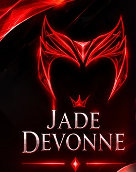

GTA ROLEPLAY · PERSONAGEM
GTA ROLEPLAY · PERSONAGEM
UM UNIVERSO DENTRO DO CASSXPConheça Jade Devonne
Uma personagem marcante, muitas histórias e encontros inesperados na cidade. Acompanhe as aventuras da Jade nas lives de GTA RP.
BLOODLINES RP JORNADA ATUAL
A jornada de Jade
Entre os elementos

CAPÍTULO EM ANDAMENTO
Entre os elementos, uma história ganha vida.
Na Bloodlines, Jade vive uma nova fase como bruxa elemental. Sua trajetória segue uma narrativa construída ao longo dos RPs, com descobertas, decisões e acontecimentos que aprofundam a personagem.
As situações espontâneas continuam fazendo parte de GTA RP, mas a jornada principal tem continuidade e novos capítulos para acompanhar. Sem spoilers: o próximo momento pode mudar tudo.
✧ Uma personagem, muitos capítulos. Acompanhe a evolução de Jade nas lives do CassXP.
✧ ALÉM DOS CAPÍTULOS
Curiosidades sobre Jade
Pequenos detalhes que revelam o visual e a trajetória da personagem — sem spoilers. Você pode expandir ou recolher os cartões.
Um visual marcante
Os cabelos vermelhos intensos, as tatuagens e os looks escuros fazem parte do visual característico da Jade — uma presença fácil de reconhecer na cidade.
Uma bruxa elemental
A fase atual de Jade na Bloodlines é marcada pela magia elemental e por uma história que se desenvolve em capítulos ao longo das lives.
Roteiro e improviso
Jade tem uma trama principal estruturada, mas também vive encontros e situações espontâneas no RP. É essa mistura que torna cada transmissão diferente.
Novos capítulos nas lives
Quem acompanha o CassXP na Twitch vê a história acontecer; quem chega depois pode conhecer a personagem pelos clipes e pela galeria do site.
✧ A história continua...Acompanhar Jade na Twitch ↗